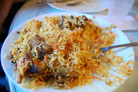
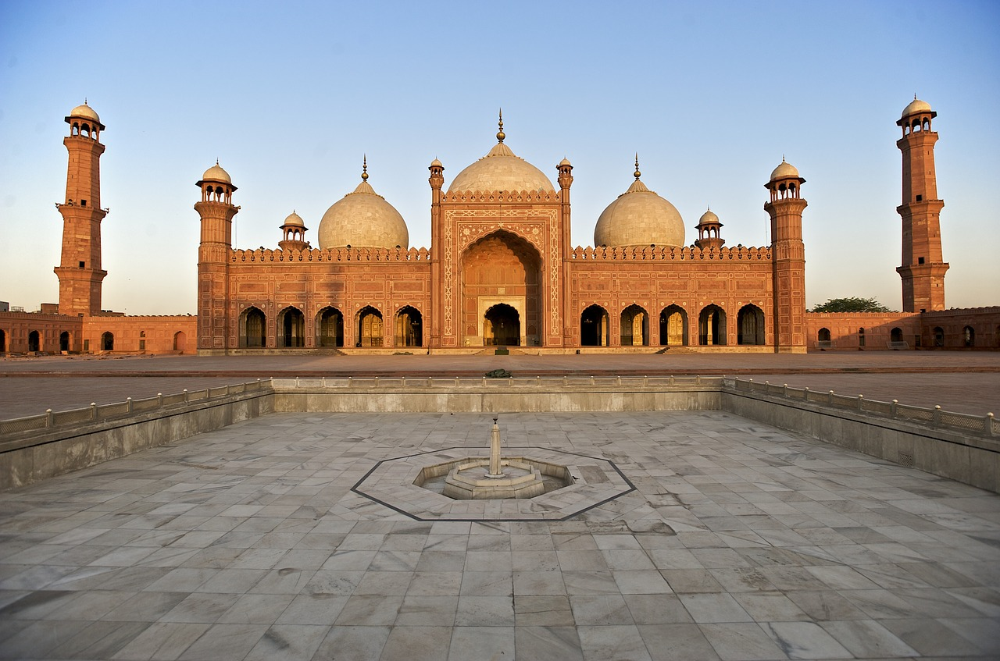
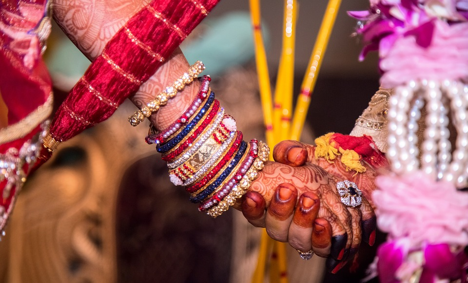
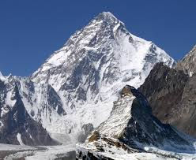
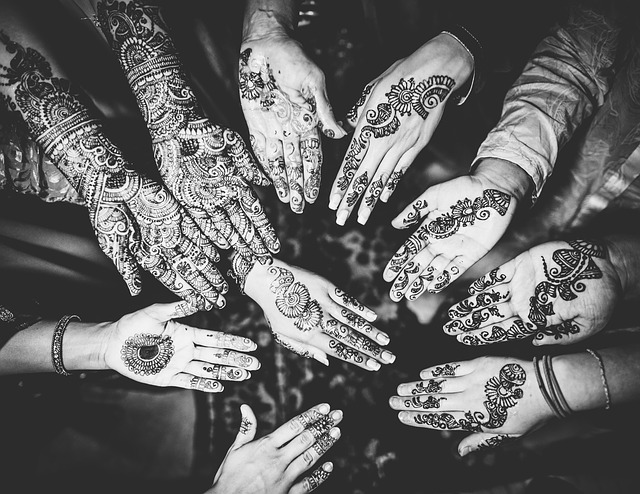

Culture Corner
Description: Pakistan, or the Islamic Republic of Pakistan, is a heavily populated country located in Southwest Asia. (population: 197 million [2017])
Languages: The languages spoken in Pakistan include: Urdu, Punjabi, Sindhi, Pashto, Saraiki, Balochi, and English. Urdu is widely spoken all over the country by all residents. English is widely spoken as well by residents and politicians.
Food: Characterized by its spiciness and heavy seasoning, Pakistani food is a blend of Indian, Central Asian, and Mughal cuisine. Some popular dishes include biryani, pulao, nihari, lentils, qorma, and paya. Fusion foods are also common; blending Pakistani and Chinese foods is a common trend. Also, while most of Pakistan enjoys spicy food, the northern areas enjoy more mild food.

Religion: The main religion of Pakistan is Islam. Christianity and Hinduism are also practiced in Pakistan, but in small numbers. Religions other than Islam make up roughly 3% of Pakistan.
Arts: Poetry, textiles, and architecture are the major art forms of Pakistan.
- Poetry- One type of poetry is Ghazal, romantic poems with musical accompaniment.
- Textiles- Popular textiles feature colorful patterns of floral patterns, and sometimes scenes of nature.
- Architecture- Popular architectural sites include Mohenjo-daro, Mosque of the Pearls, Shalimar Gardens, and the Badshahi Mosque.

Fashion:
- Clothes- Traditional clothing worn in Pakistan is called shalwar kameez. It is a long shirt paired with loose pants.

- Jewelry- Traditional Pakistani necklaces and earrings are made of gold and are very heavy. Traditional Pakistani bracelets are called chooriyan. They are typically made of glass and come in different colors, and some even feature glitter. Lastly, a tikka is like a small brooch, but it is worn on the forehead. Tikkas are usually worn on special occasions like weddings.

Miscellaneous:
- Landforms- Pakistan hosts the second largest mountain in the world. Named K2, or Mount Godwin-Austen or Chhogori, it peaks at 28,251 feet.

- Henna- Henna tattoos, also called mehndi, are traditional temporary tattoos put on the hands, arms, and feet. Henna designs are usually intricate floral designs. Women get henna tattoos on special occassions like weddings.

Music from Pakistan: